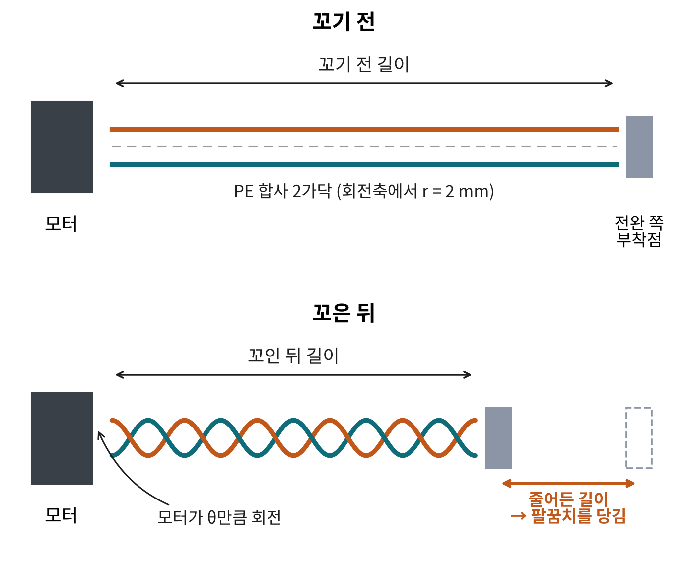
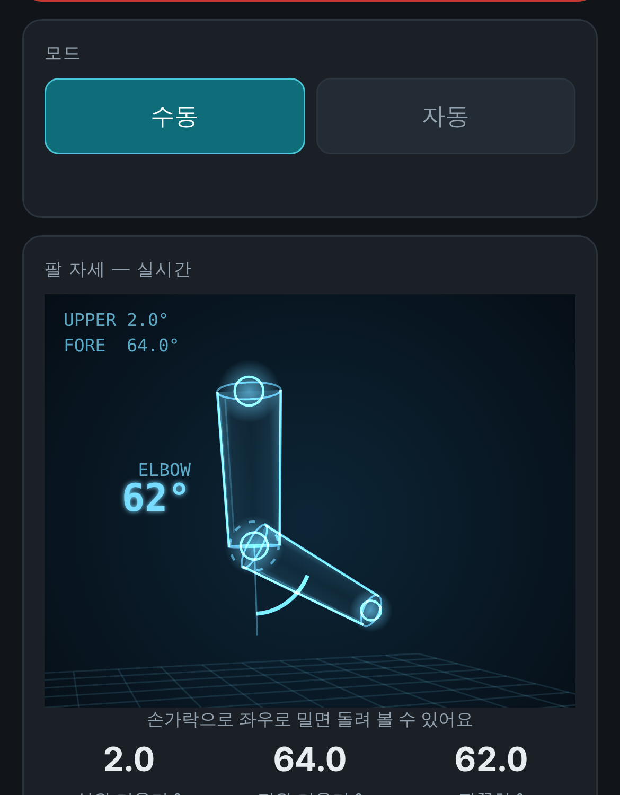

Introduction
- 퇴원 후 가정 재활에 쓰이는 팔꿈치 보조기기는 충분한 보조력과 함께 착탈 시간, 고정 상태, 압박, 무게, 크기 등 착용 부담이 적어야 함.
- 기존의 단단한 외골격은 기계 관절의 회전축을 사람의 팔꿈치 회전축과 정확히 맞춰야 하고, 무게와 복잡한 구조 때문에 착용 부담이 커질 수 있음.
- 착용이 번거롭거나 불편하고 무거우면 가정에서 꾸준히 사용하기 어려움.
- 따라서 본 연구는 단단한 프레임 없이 유연한 밴드와 꼬임줄 구동기(Twisted String Actuator, TSA)로 팔꿈치 굴곡을 보조하는 기기를, 20대 남성 평균 인체치수, 팔꿈치 굴곡 범위, 모터 성능을 함께 고려하여 설계하고 착용성을 평가하고자 함.
Method
- Size Korea 8차 20~24세 남성 평균값(위팔둘레, 팔꿈치둘레, 팔길이, 위팔길이, 겨드랑높이, 팔꿈치높이, 체중)을 사용함 [1].
- 팔 단면 둘레는 Size Korea 6차 20대 남성 3차원 인체 형상에서 추출함 [1].
- JavaScript 시뮬레이터를 개발하여 굴곡각별 줄의 수축 길이, 장력, 모터 토크, 회전수를 계산함.
- 상완을 아래로 내린 자세에서 팔 무게의 50 %를 보조하는 조건으로 계산하였으며, 전완·손의 질량 비율(체중의 2.52 %)과 무게중심 위치는 Plagenhoef 등의 값을 사용함 [2].

| 설계 항목 | 기준 | 근거 |
|---|---|---|
| 굴곡 각도 | 60° | 수축률·모터 토크가 정격 범위 안 |
| 밴드 위치 | 상완: 겨드랑이(23.6 cm) 안 최대 전완: 팔꿈치에서 6~9 cm | 시뮬레이션 |
| 허브 지름 | 4 mm 이상 | 토크·회전수 정격 50 % 이내 |
| 착용 부담 | 무게 173.5 g | 유연한 밴드, 벨크로, 어깨끈 |
- 3차원 인체 형상을 바탕으로 YUKA CAD의 맞춤(MTM) 패턴 기능을 이용하여 팔 곡면에 맞는 밴드 패턴을 제작함.
- 네오프렌 원단을 패턴대로 재단하고 가장자리를 박음질하여 상완 5 cm, 전완 3 cm 폭의 유연한 밴드를 만들고, 벨크로로 고정함.
- 모터 마운트, 줄 허브, 전완 앵커, 방향전환 부품 5종을 3D 프린팅하여 바느질로 밴드에 고정함.
- 상완 밴드에 모터, 줄 허브, 마이크로컨트롤러, 모터 드라이버를 통합하고, PE 합사로 상완과 전완 밴드를 연결함. 어깨끈으로 흘러내림을 방지함.
- 상완·전완 밴드에 IMU 센서를 각각 부착하여 팔의 움직임을 감지함.
- 기기 총 질량은 173.5 g임 (배터리 제외).

- 두 가닥의 PE 합사를 모터로 꼬면, 나선으로 감기는 만큼 양 끝 사이 길이가 줄어들어 팔꿈치를 당김 [3].

(꼬기 전 길이)² = (꼬인 뒤 길이)² + (r·θ)²
r: 회전축~줄 중심 거리(2 mm), θ: 모터가 꼬은 각도
- 상완·전완의 IMU 2개로 팔꿈치 굴곡각을 실시간으로 계산함.
- 스마트폰을 Wi-Fi로 연결하여 수동 모드(속도 조절)와 자동 모드(굴곡각을 따라 줄 길이 조절)로 제어하고, 팔 자세를 3D로 실시간 표시함.
- 시제품은 마네킹 팔에서 약 100°(마네킹이 꺾이는 한계)까지 굽혀지는 것을 확인함.

Results
- 전완 밴드를 팔꿈치에서 멀리 둘수록 필요한 장력은 줄고 수축 길이는 늘어남. 상완 밴드는 멀리 둘수록 줄이 길어져 필요한 수축 비율이 줄어, 겨드랑이 아래 최대한 멀리 배치함.
- 시뮬레이션 결과, 전완 부착점 9 cm 조건에서 60° 굴곡에 필요한 수축 길이는 8.3 cm, 장력은 14 N이었음.
- 회전축에서 줄 중심까지의 간격이 작으면 필요한 회전수가 늘고, 크면 필요한 토크가 늘어남. 두 값이 모두 모터 정격의 50 % 이내가 되는 간격 2 mm를 목표값으로 하여, 허브 지름을 4 mm 이상으로 설정함.
| 60° 굴곡 요구값 | 값 |
|---|---|
| 수축 길이 | 8.3 cm |
| 장력 | 14 N |
| 허브 지름 | 4 mm 이상 |
- 20대 남성 10명을 대상으로 전원을 연결하지 않은 상태에서 기기를 착용시킨 뒤, 팔을 굽혔다 펴는 동작 후 5점 척도 12문항으로 평가함.
| 영역 | 문항 | 평균 ± SD |
|---|---|---|
| 착용 과정 | 착탈 시간, 밴드 길이 | - |
| 고정 상태 | 상완 밴드, 전완 밴드, 어깨끈 | - |
| 압박과 자극 | 조임 통증, 눌림·쓸림, 저림 | - |
| 무게와 동작 | 무게 부담, 동작 방해 | - |
| 수용도 | 가정 착용 시 크기, 전반 만족 | - |
- 모든 평가 항목의 평균이 3.0 이상으로, 착용 만족도가 전반적으로 긍정적으로 나타남.
Conclusion
- 20대 남성 평균 인체치수를 기준으로 상완 밴드는 겨드랑이 아래 최대한 멀리, 전완 밴드는 팔꿈치에서 6~9 cm에 두는 배치 기준을 제시함.
- 60° 굴곡에 필요한 수축 길이(8.3 cm)와 장력(14 N)을 바탕으로 허브 지름 4 mm 이상을 정하고, 단단한 프레임 없이 유연한 밴드와 꼬임줄로 굴곡을 보조하는 173.5 g의 시제품을 제작함.
- 전원을 연결하지 않은 착용 평가에서 모든 항목의 평균이 3.0 이상으로 착용 만족도가 긍정적으로 나타남.
→ 인체치수, 구조 설계, 착용성 평가를 통합한 착용형 팔꿈치 보조기기 설계의 기초를 제시함.
Future Work
- 구동 중인 기기를 착용한 상태에서 보조 효과와 착용성 평가
- 다양한 체형, 연령, 성별로 평가 확대
- 모터 출력 개선과 배터리 통합